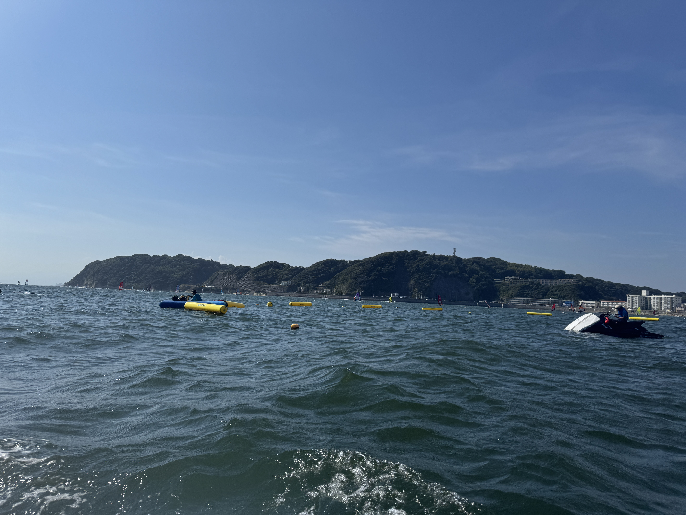
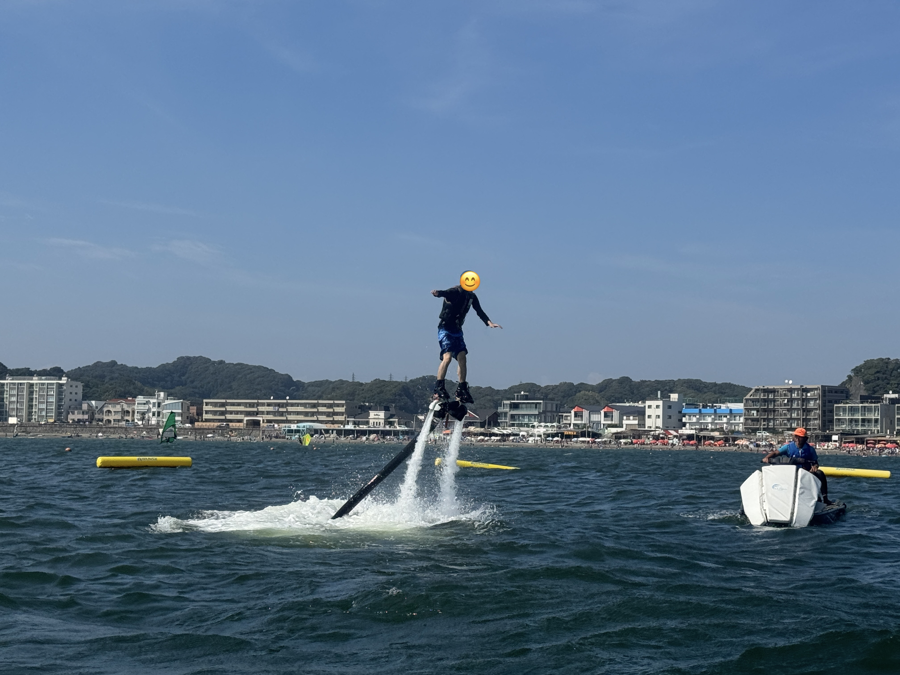
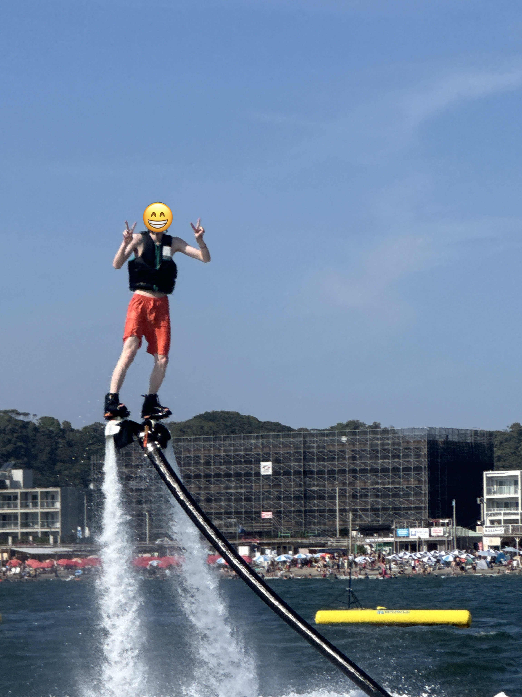
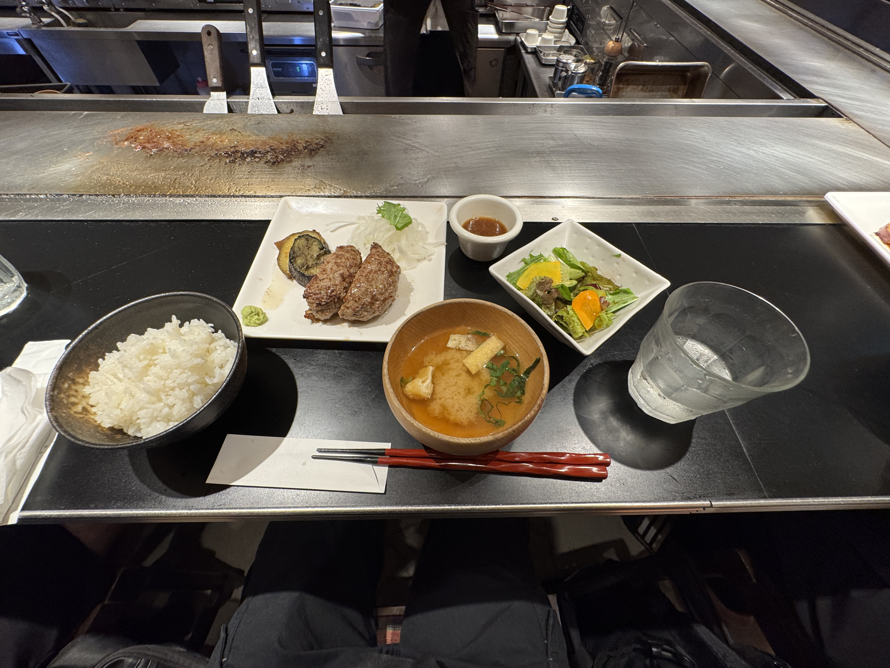

このページは、VRフライボード制作記にめちゃくちゃ関連しています。こちらも見てください。
2025年8月17日は昼下がり。
大学の友人2人とともに横須賀線を南下し、目指すは神奈川県・逗子海岸。
目的はフライボードの体験。
前に海に入ったのはコロナ前の中学2年生だったから、もう6年間も海に浸かってないことになる。
溺れないか、心配だ。

上の写真のように、足にめちゃくちゃ重い装置をつけます。
私は前にラフティングをした際に両足ともに攣った過去があり、足の固定感がその状況とすごく似ていて
水中で攣らないかずっとびくびくしてました。（最後まで大丈夫だった）
- - -

感覚としては、最初うつ伏せの状態でいて、
水上バイクから水圧を出してくれた瞬間に、体育座りみたいに足を曲げます。
すると、ドドドドという感覚と共に、大地全体を押し上げるような感覚がしてきて、気づいたら空に舞い上がってます。
文字通り大地全体を肌で感じる、貴重な経験でした。

H君。彼も初めてだった筈なのに、なんであんなに上手かったんだろう。
（私の2倍は高度出してたし、くるくる回転とかまでしてた）
- - -

帰りに、鎌倉の鶴岡八幡宮へ。
祈ったことはただ一つ。
「大学のプログラム配属（東大でいう進振り）第一希望通れ！！」（結果 → 知床旅行記へ）

夜ご飯は八幡宮近くのハンバーグ屋さんで食べたんだけど、それが想像を遥かに超える美味しさで。
特になす。あれは今まで食べた中で1番だったのでは？ と思うほど。
ハンバーグって、わさびと合うんだね。
ワンダーバーグというお店です。鎌倉に訪れた際は是非行ってみてください。
＊
子供心をくすぐるような、いい夏休みの思い出になりました。
こうして私は、次の日に20歳の誕生日を迎えたのです。